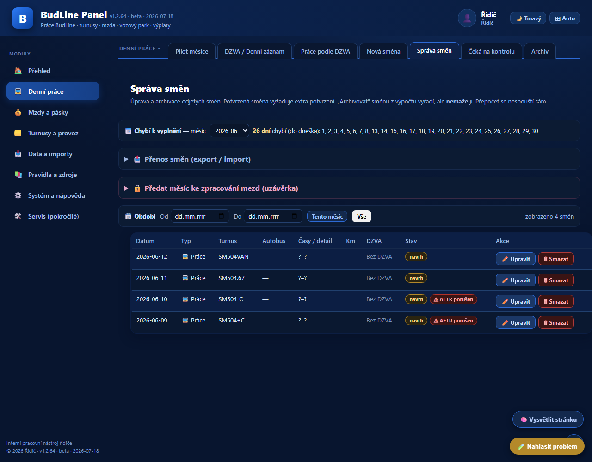
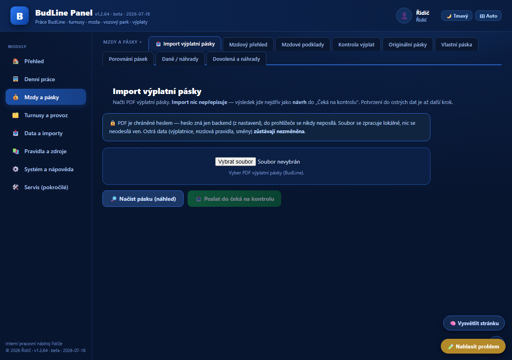
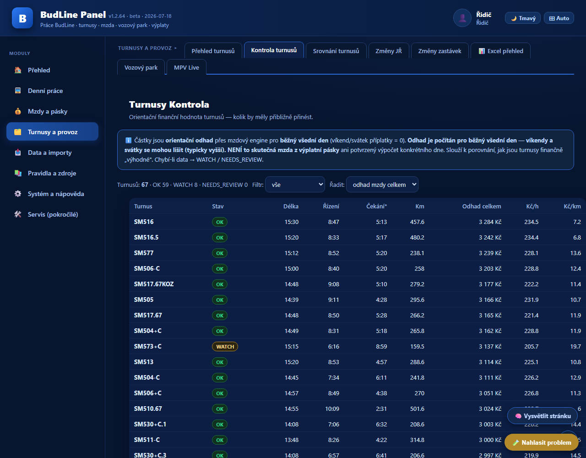

🚍BudLine Panel
An app for bus drivers that keeps track of shifts, rosters and pay. Instead of paper notes and mental arithmetic: I log my shifts and the app calculates what should arrive on the payslip — and at the end of the month I check whether it matches. Everything runs locally on the computer, no cloud, no accounts.
Python SQLite Windows macOS v1.2.63 BETA
What it does
Why it exists: a bus driver's shifts are scattered across rosters, with weekend and holiday bonuses, and at the end of the month there is a payslip that is hard to verify. BudLine is a simple panel for that: I log my shifts (or read them from the driver card), the app adds them up according to the rules and shows what the pay should be. Two of us use it — me and a colleague from work.
Shift and roster records: each shift has a date, times and a type; the app validates the entry (HH:MM time format, no negative numbers) and builds a monthly overview.
Payroll documents: from the logged shifts the app calculates the pay basis according to configured rules (hours, bonuses). At the end of the month you just compare it with the payslip — if something is off, you see exactly where.
Driver card reading: since version 1.2.13 the app can read data directly from the driver's chip card via a reader — less manual typing.
Everything local: data stays on the computer (SQLite). Updates install silently in the background; an upgrade never overwrites user data or settings.
Key features
- Monthly shift overview — logged shifts roll up into an overview with attendance totals.
- Payroll calculation — by rules (hours, bonuses); end-of-month comparison with the payslip.
- Month close & fill from payslip — the home page shows an unclosed month; on close, one button fills items that aren't on the standard roster (fuel and regular bonuses, laundry, CNG) straight from the uploaded payslip.
- In-app roster editor — create a roster in a table or edit an existing one, batch import (HTML/XML/ZIP), stop autocomplete and a vehicle field (V-code, e.g. "3-axle bus").
- Compliance assessment — for a single duty roster and for the whole month: does the planned shift meet AETR and Czech Gov. Reg. 589/2006? Day-by-day list of breaches, full and short version, print to PDF.
- Plan vs reality from the driver card — next to the planned roster you see what the card actually recorded (driving, work, rest) and where it differs; rest periods are evaluated continuously across midnight and card times are converted from UTC to local time.
- Overall monthly assessment — payslip, driven rosters and the driver card in one view: how much was really driven, how it matches what was paid, and a summary of all breaches.
- Driving-time checks (AETR) — shifts that may breach road-transport rules are flagged for review; pay is never changed.
- Driver card import — chip card data via a reader (since v1.2.13).
- MPV Live / Operations — real-time operation of Semily rosters: currently running trips, trip detail (delay, occupancy), a vehicle-position map and live delays (since v1.2.14, read-only).
- Entry validation — time and value checks so a typo never reaches the payroll.
- Silent auto-update — new versions install themselves; config and data are kept.
- No cloud — no account, no server, data only on the computer.
Screenshots




Screenshots use sample (anonymised) data — real payslips and personal details do not belong on the web.
Installation (beta)
🔒 The app is not publicly downloadable. You will not find an installer here on purpose — I send the link personally to whoever I give the app to. The version number on this page stays: it fills in automatically from the same place the installed app uses for its silent updates.
🔒 The installer is password-protected — I share the password personally; it is not and will not be on the web.
🍏 macOS: on first launch, right-click the app → Open (it is unsigned, it's our own app). If it says "damaged", run xattr -cr "/Applications/BudLine Panel.app" in Terminal.
🛡️ Windows may show a SmartScreen warning (unsigned beta installer). If you know the app and expect it from me, click "More info" → "Run anyway".
⚠️ Close the running app before installing.
Status
Version 1.2.86 BETA (August 2026). Two of us use the app actively; it is developed against real payslips. Beta = it works, but it is still being polished; the installer is unsigned and password-protected.